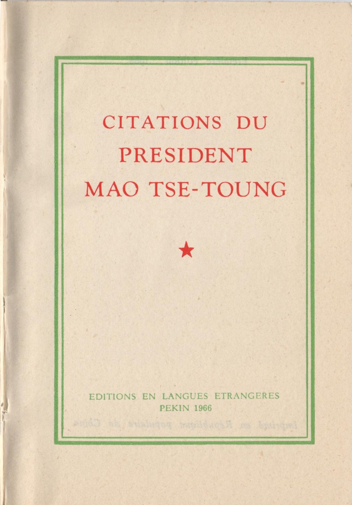

1:13:25 · 7 OPERE
Il palestinismo in Italia e nel mondo.
Il filo del discorso
Dr Divago conversa con Filippo Piperno, direttore di Inoltre, e Stefano Piperno, presidente dell’associazione, sul ritorno del pregiudizio antiebraico e sul rapporto fra Israele, politica italiana e discorso pubblico. Gli interlocutori usano «palestinismo» come categoria polemica per descrivere ciò che interpretano come una saldatura fra ostilità a Israele, rifiuto dell’Occidente e stereotipi antisemiti.
Leggi la sintesi completaRiduci la sintesi
È la loro lettura: critica di un governo, solidarietà verso i civili palestinesi, pregiudizio contro gli ebrei e adesione a Hamas richiedono distinzioni, senza attribuire identiche intenzioni a tutti i partecipanti a una protesta. La prima parte ripercorre l’immagine dell’ebreo come figura della modernità e le accuse contraddittorie che lo hanno associato tanto al capitalismo quanto al bolscevismo. Il richiamo a Norman Cohn e ai falsi Protocolli introduce il tema della propaganda e della persistenza del sospetto anche dopo l’integrazione. I Piperno contestano inoltre la rappresentazione degli ebrei come un gruppo uniformemente ricco e l’obbligo, imposto a cittadini della diaspora, di rispondere delle decisioni dello Stato israeliano. La riflessione diventa personale attraverso i ricordi delle leggi razziali e della persecuzione a Roma. Stefano Piperno ricorda il libro scritto con Claudio Bondì, Perché ci siamo salvati, e racconta il salvataggio della madre. L’accostamento a Sartre porta in primo piano un’identità che il pregiudizio può imporre dall’esterno. Il film di Spielberg richiamato senza titolo è identificabile solo in via probabile con The Fabelmans; la scheda distingue questi riferimenti dalle opere soltanto evocate per tema. La seconda parte si concentra sul conformismo degli ambienti culturali, sulla circolazione delle parole nei media e sui finanziamenti alle istituzioni universitarie. Il Libretto rosso di Mao e un libro francese sulla stampa sotto l’occupazione nazista funzionano da termini di confronto nella critica degli interlocutori, senza dimostrare da soli l’esistenza di un’unica regia delle mobilitazioni contemporanee. Scuola, insegnamento della storia, social network e cambiamenti del dibattito a sinistra completano il quadro. Nel finale si discutono la sicurezza delle comunità ebraiche, il dissenso interno a Israele, il progetto di legge Delrio e l’uso della parola genocidio. Le valutazioni politiche e giuridiche restano attribuite ai relatori e sono accompagnate da precisazioni nelle note. La chiusura contiene anche una falsa attribuzione della strage alla Brown University a uno studente: le autorità hanno identificato un’altra persona, come chiarisce la correzione editoriale. Il valore documentario della conversazione comprende le esperienze raccontate e le sue prese di posizione, senza trasformare affermazioni non dimostrate o accuse smentite in fatti accertati.
I libri nel discorso

Licenza per un genocidio
Note sul riferimento
Copertina: Castelvecchi · 2015
Copertina autentica controllata visivamente. Edizione di riferimento; non identifica l’esemplare usato o citato nel video.
Riferimento ricavato dalla trascrizione automatica.

I Protocolli dei savi di Sion (falso antisemita)
Note sul riferimento
Copertina storica di un falso antisemita: The Jewish Peril · Londra, Eyre & Spottiswoode · 1920
Fotografia museale della copertina dell’edizione inglese del 1920, conservata dall’USHMM. È mostrata come documento storico di propaganda, senza attribuire questa edizione al video o avallare le sue falsificazioni.
Riferimento ricavato dalla trascrizione automatica.
The Fabelmans
Identificazione probabile
Note sul riferimento
Poster digitale ufficiale del film: Universal, poster digitale ufficiale del film, 2022
Riferimento ricavato dalla trascrizione automatica.

Réflexions sur la question juive
Identificazione probabile
Note sul riferimento
Copertina: Gallimard · Folio essais 10 · 1985 · francese
Immagine autentica dell’opera, controllata visivamente; non identifica l’edizione usata nel video.
Riferimento ricavato dalla trascrizione automatica.
Perché ci siamo salvati
Note sul riferimento
Copertina: Marsilio, Gli specchi, 2020
Riferimento ricavato dalla trascrizione automatica.

Citazioni del presidente Mao Tse-tung (Libretto rosso)
Note sul riferimento
Frontespizio dell’edizione francese del 1966: Frontespizio francese, Éditions en langues étrangères, Pékin 1966; non copertina esterna
Immagine della prima edizione francese del 1966; il record di Rennes descrive la seconda del 1967. Non assegnati ISBN, paginazione o prefazione di un’edizione all’altra. Nessuna traduzione identificata nel video.
Riferimento ricavato dalla trascrizione automatica.
L’argent nazi à la conquête de la presse française
Identificazione probabile
Note sul riferimento
Copertina: Jean Picollec, 1981, periodo trattato 1940–1944
Riferimento ricavato dalla trascrizione automatica.